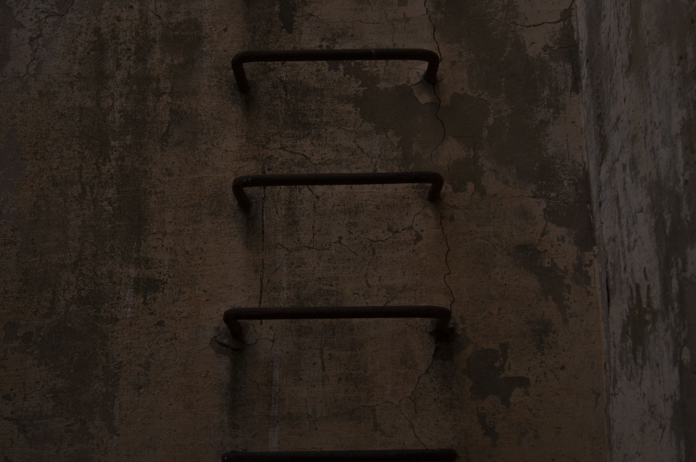

Contaminazioni




“Contaminazioni” è una raccolta di foto che ha come scopo quello di far riflettere l’uomo sul passaggio del tempo. Il soggetto principale sono gli defici abbandonati che un tempo avevano uno scopo, sovrastati dalla natura. Vengono presi in considerazione 2 luoghi principali, il Conventazzo del monte Rossomanno (EN) e il Pozzo Mezzena (EN).
Software utilizzati:
Nessuno